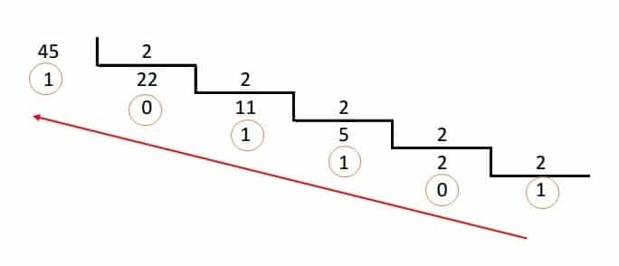
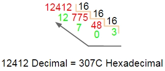
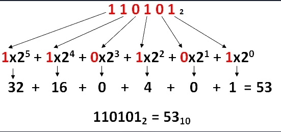
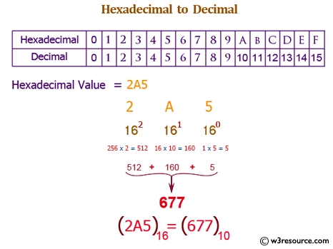

🟢 Aula 12: Representação de Dados e Conversão de Bases
Disciplina: Arquitetura de Computadores (Cód. ARQ-01)
Curso: Inteligência Artificial e Ciência de Dados, Uniube
Semana: 12 | 04/05/2026
Professor: Romualdo Mathias Filho
Tipo: 📘 Teórica
Tópicos: Sistemas Posicionais e Bases Numéricas (Decimal, Binário e Hexadecimal), Algoritmos de Conversão (Divisões Sucessivas e Polinômio Posicional), e Conversão Direta por Nibbles e Medidas de Armazenamento de Dados.
🎯 Visão Geral da Aula & Recursos
Compreenderemos a base matemática posicional que permite traduzir pulsos elétricos analógicos de silício para representações binárias lógicas (0 e 1), como compactá-las em formato hexadecimal para depuração de memória e como realizar conversões precisas de unidades de armazenamento.
- O que você vai dominar:
- A estrutura lógica e posicional dos sistemas decimal, binário e hexadecimal.
- Os algoritmos formais de conversão por divisões sucessivas e polinômios posicionais (soma de pesos).
- A conversão direta binário-hexadecimal por agrupamento de bits e o dimensionamento de unidades de armazenamento (Bytes, KB, MB, GB, TB).
- Pré-requisitos: Fundamentos de Organização (Aula 02) e Memória Virtual (Aula 06).
- 📂 Recursos Adicionais para Download:
- Base Converter Online (Simulador Visual) — Simulador recomendado para validação rápida de exercícios de conversão múltipla.
- IEEE 754 Floating-Point Simulator — Ferramenta interativa de conversão de ponto flutuante em nível de bits.
🎯 Objetivo da Aula
Ao final desta aula, os alunos serão capazes de:
- Diferenciar sistemas posicionais de numeração e suas respectivas bases matemáticas.
- Aplicar os algoritmos de divisões sucessivas e polinômios posicionais para converter valores entre as bases 2, 10 e 16.
- Executar conversões diretas por agrupamento de nibbles (4 bits) para otimizar a leitura de dumps de memória.
- Calcular dimensionamento de armazenamento de dados utilizando múltiplos binários comerciais e lógicos de forma correta.
🔄 Revisão Rápida (5 min)
| Conceito (Aulas Anteriores) | Conexão com a Aula de Hoje |
|---|---|
| Aula 02 (Fundamentos da Organização) | Vimos que memórias e registradores armazenam estados elétricos analógicos que são interpretados logicamente como 0 ou 1. Hoje entenderemos a matemática por trás da interpretação posicional desses dados. |
| Aula 07 (Conjunto de Instruções) | Analisamos os opcodes e dados codificados em linguagem de máquina. Hoje aprenderemos por que essas instruções longas em binário são compactadas em caracteres hexadecimais nos dumps de depuração. |
| Aula 11 (Hipervisores) | Estudamos o gerenciamento de hardware por hipervisores e a alocação de RAM em gigabytes. Hoje dominaremos a exatidão das escalas de armazenamento (Bits, Bytes, KB, MB, GB, TB). |
📌 1. A Lógica do Silício: Sistemas Posicionais e Bases Numéricas [Teoria ⏳ 15 min]
Em qualquer computador moderno, o silício processa exclusivamente sinais elétricos. Um circuito integrado detecta tensões de referência: tensões baixas (próximas a 0V) são mapeadas logicamente como o dígito binário 0, e tensões altas (próximas ao VCC do chip, ex: 1.2V ou 3.3V) são mapeadas como o dígito 1. Essas duas unidades básicas são os bits (binary digits).
Para que o processador possa representar números maiores, caracteres ou instruções complexas, os bits são agrupados. A forma como esses grupos representam valores baseia-se no conceito de Sistema Posicional. Em um sistema posicional, o peso ou valor de cada dígito depende estritamente da sua posição relativa no número.
1.1 — Comparação de Bases Numéricas Clássicas
Na arquitetura de computadores, três bases posicionais são fundamentais:
| Base | Nome | Dígitos Disponíveis | Relação de Aplicação Técnica |
|---|---|---|---|
| 10 | Decimal | 0, 1, 2, 3, 4, 5, 6, 7, 8, 9 | Interface humana tradicional (cálculos de negócios, exibição final). |
| 2 | Binário | 0, 1 | Representação interna física da CPU (registradores, barramentos, transistores). |
| 16 | Hexadecimal | 0, 1, …, 9, A, B, C, D, E, F | Formato de depuração de baixo nível (dumps de memória, registradores de status, cores). |
💼 Pergunta de Entrevista
Por que desenvolvedores de baixo nível e arquitetos de computadores utilizam a base Hexadecimal em depuradores (debuggers) em vez de Binário ou Decimal?
Resposta Esperada: A base Hexadecimal simplifica radicalmente a leitura humana e a depuração. Como 16 = 2⁴ (2 elevado a 4), exatamente 4 bits (um nibble) podem ser compactados em um único caractere hexadecimal (ex:
1111em base 2 =Fem base 16). Um byte completo de 8 bits é representado de forma exata por apenas dois caracteres (ex:11111111em base 2 =FFem base 16), facilitando a identificação imediata de alinhamento de bytes físicos e de palavras de memória (Word de 32 bits = 8 caracteres hexa) sem o overhead de leitura de longas strings binárias ou conversões decimais complexas.
📌 2. Algoritmos de Conversão: A Matemática de Mudança de Bases [Teoria & Prática ⏳ 20 min]
Para transferir dados entre a CPU, a memória e a visualização final do usuário, precisamos executar conversões matemáticas de bases.
2.1 — Conversão de Decimal (Base 10) para Qualquer Base: Divisões Sucessivas
Para converter um valor inteiro da base 10 para outra base B (onde B pode ser 2 ou 16), aplicamos o Algoritmo de Divisões Sucessivas:
- Divide-se o número decimal por B.
- O resto da divisão constitui o dígito menos significativo (mais à direita).
- Divide-se o quociente obtido por B novamente, e o novo resto constituirá o próximo dígito à esquerda.
- Repete-se o processo até que o quociente da divisão seja zero.
- O resultado final é lido de baixo para cima (do último resto obtido ao primeiro).
Exemplo Prático 1: Converter o decimal 45 para Binário (Base 2):
Aplicamos o método das divisões sucessivas por 2 até que o quociente seja zero. O número binário correspondente é obtido pela leitura dos restos da divisão de baixo para cima (do último resto ao primeiro).

Passo a passo matemático:
45 ÷ 2 = 22(Resto 1 - Dígito menos significativo, LSB)22 ÷ 2 = 11(Resto 0)11 ÷ 2 = 5(Resto 1)5 ÷ 2 = 2(Resto 1)2 ÷ 2 = 1(Resto 0)1 ÷ 2 = 0(Resto 1 - Dígito mais significativo, MSB)- Lendo de baixo para cima, temos: 45 (base 10) = 101101 (base 2), ou seja, 45₁₀ = 101101₂
Exemplo Prático 2: Converter o decimal 12412 para Hexadecimal (Base 16):
Para a base 16, dividimos o valor decimal sucessivamente por 16 até que o quociente seja zero. Os restos que resultam em valores entre 10 e 15 são mapeados para suas respectivas letras correspondentes (A a F).

Passo a passo matemático:
12412 ÷ 16 = 775(Resto 12 ➔ Equivalente a C em hexadecimal)775 ÷ 16 = 48(Resto 7)48 ÷ 16 = 3(Resto 0)3 ÷ 16 = 0(Resto 3 - Dígito mais significativo)- Lendo de baixo para cima, temos: 12412 (base 10) = 307C (base 16), ou seja, 12412₁₀ = 307C₁₆
2.2 — Conversão de Qualquer Base para Decimal (Base 10): Polinômio Posicional
Para converter um valor de qualquer base B de volta para decimal, utiliza-se a Expansão Polinomial. Multiplica-se cada dígito pela base B elevada à potência de sua posição (iniciando em 0, da direita para a esquerda) e somam-se os resultados.
Exemplo Prático 1: Converter 110101 (base 2) para Decimal (Base 10):
Multiplicamos cada bit pelo peso correspondente de sua posição (potência de base 2), iniciando da direita (posição 0) para a esquerda (posição 5).

Passo a passo matemático:
- Posições (direita para esquerda): 5, 4, 3, 2, 1, 0
1 · 2⁵ + 1 · 2⁴ + 0 · 2³ + 1 · 2² + 0 · 2¹ + 1 · 2⁰1 · 32 + 1 · 16 + 0 · 8 + 1 · 4 + 0 · 2 + 1 · 132 + 16 + 0 + 4 + 0 + 1 = 53- Logo, 110101 (base 2) = 53 (base 10).
Exemplo Prático 2: Converter 2A5 (base 16) para Decimal (Base 10):
A lógica é a mesma, mas a base de cálculo é 16. Lembre-se de substituir a letra pelo seu valor decimal equivalente (neste caso, A = 10).

Passo a passo matemático:
- Posições (direita para esquerda): 2, 1, 0 (Lembrando que A = 10)
2 · 16² + 10 · 16¹ + 5 · 16⁰2 · 256 + 10 · 16 + 5 · 1512 + 160 + 5 = 677- Logo, 2A5 (base 16) = 677 (base 10).
🧠 Checkpoint: Teste seu Conhecimento!
🔍 Exercício Rápido: Qual é a representação em Hexadecimal e Binário do número decimal 254?
Resposta Correta:
- Hexadecimal:
254 ÷ 16 = 15(Resto 14 ➔ E);15 ÷ 16 = 0(Resto 15 ➔ F). Lendo de baixo para cima:FE (base 16).- Binário: Convertendo de forma direta a partir do hexadecimal
FE, temos:F=1111eE=1110. Logo:11111110 (base 2).
⚠️ Gotcha de Infraestrutura: Estouro de Inteiros (Integer Overflow)
Na arquitetura física de computadores, os registradores têm tamanhos rígidos (ex: 8 bits, 16 bits, 32 bits, 64 bits). Um registrador de 8 bits consegue representar valores binários de
00000000_2a11111111_2(em decimal: 0 a 255). Se o processador tentar armazenar o valor decimal 256 em um registrador de 8 bits, ocorre o fenômeno elétrico do Integer Overflow. O número 256 exige 9 bits (100000000_2). Como o registrador físico só armazena os 8 bits menos significativos, o 9º bit (o bit extra à esquerda) é simplesmente descartado pelo processador. O valor final armazenado no registrador será00000000_2(0 em decimal). Ignorar os limites físicos de conversão de tipos de dados nos códigos de software gera falhas críticas de corrupção de memória e segurança.
📌 3. Conversão Direta e Unidades de Armazenamento [Prática Guiada ⏳ 20 min]
Para acelerar o trabalho técnico e otimizar o dimensionamento de recursos de infraestrutura, os engenheiros de computação utilizam métodos rápidos de agrupamento de bits e dominam as escalas de armazenamento físico.
3.1 — Conversão Direta Binário-Hexadecimal por Nibbles (4 bits)
Como 16 = 2⁴, existe um mapeamento direto e exato entre 4 bits (um nibble) e 1 caractere hexadecimal. Isso nos permite converter qualquer número binário para hexadecimal instantaneamente de forma visual:
- Agrupe o número binário em blocos de 4 bits, começando da direita para a esquerda.
- Se o bloco mais à esquerda não tiver 4 bits, adicione zeros à esquerda para completar.
- Converta cada bloco de 4 bits individualmente para seu caractere hexadecimal correspondente.
Exemplo Prático: Converter 10111100101 (base 2) para Hexadecimal:
- Agrupando da direita para a esquerda:
10111100101 - Adicionando zero à esquerda no primeiro grupo:
0101|1110|0101 - Convertendo os grupos individualmente:
0101 (base 2)=5 (base 16)1110 (base 2)= 14 (base 10) =E (base 16)0101 (base 2)=5 (base 16)
- Resultado final:
5E5 (base 16)
3.2 — Unidades de Armazenamento de Dados
Os bits processados pelo hardware são organizados e agrupados em estruturas padronizadas para dimensionamento físico de capacidade de memória e disco:
| Unidade | Símbolo | Equivalente Matemático | Observação Técnica / Arquitetura |
|---|---|---|---|
| Bit | b | 0 ou 1 | Menor unidade lógica de dados em circuitos digitais. |
| Byte | B | 8 bits | Unidade básica de endereçamento de memória RAM. |
| Kilobyte | KB | 2¹⁰ Bytes (1024 B) | Tamanho típico de arquivos de configuração compactos e scripts. |
| Megabyte | MB | 2²⁰ Bytes (1024 KB) | Unidade de medida para arquivos de mídia, PDFs e pequenos binários. |
| Gigabyte | GB | 2³⁰ Bytes (1024 MB) | Métrica padrão para capacidade de memória RAM e partições de sistemas operacionais. |
| Terabyte | TB | 2⁴⁰ Bytes (1024 GB) | Métrica para grandes discos de armazenamento (HDDs, SSDs NVMe) e volumes em nuvem. |
📐 Exemplos de Conversão de Unidades de Medida (Cálculo Binário Real):
Sempre que realizamos conversões em nível de sistema operacional (binário real), dividimos por 1024 para subir de escala (ex: MB → GB) ou multiplicamos por 1024 para descer de escala (ex: GB → MB):
-
Conversão de Megabytes para Gigabytes:
- Exemplo: Converter 500 MB em GB.
- Solução: Como estamos subindo de escala, dividimos o valor por 1024:
-
Conversão de Gigabytes para Terabytes:
- Exemplo: Converter 2.5 GB em TB.
- Solução: Dividimos por 1024:
-
Conversão de Kilobytes para Megabytes:
- Exemplo: Converter 2048 KB em MB.
- Solução: Dividimos por 1024:
-
Desafio — Conversão de Petabytes (PB) para Gigabytes (GB):
- Exemplo: Converter 50 PB para GB.
- Solução: Para descer de Petabytes para Gigabytes, precisamos passar primeiro por Terabytes e depois por Gigabytes, multiplicando sucessivamente por 1024:
💡 Dica de Produção (Pro-Tip): FinOps e a Diferença Comercial vs. Binária
Fabricantes de discos rígidos e sistemas operacionais interpretam as unidades de armazenamento de formas diferentes:
- Fabricantes de Hardware (Comercial): Utilizam a base decimal (10³). Para eles, 1 KB = 1000 Bytes, 1 MB = 10⁶ Bytes e 1 GB = 10⁹ Bytes.
- Sistemas Operacionais (Real Binário): Utilizam a base binária (2¹⁰). Para o sistema, 1 GiB = 1024 MiB = 1.073.741.824 Bytes.
Impacto Prático: Ao comprar um disco físico ou provisionar um disco em nuvem na AWS ou GCP de 1 TB comercial (1.000.000.000.000 Bytes), o sistema operacional lerá o disco como aproximadamente 931 GB reais binários. Em arquiteturas em nuvem de escala empresarial, ignorar essa diferença de 7% pode resultar em provisionamento incorreto de volumes persistentes de dados e incidentes de discos cheios (Out of Space), além de surpresas financeiras nos relatórios de custos de FinOps.
✍️ Exercícios Recomendados de Fixação (Prática Individual)
Para consolidar o conhecimento, resolva os exercícios abaixo e valide as suas respostas nos blocos colapsáveis:
Grupo 1: Conversão de Bases Numéricas
- Qual é o equivalente decimal do número binário
101001? - Converta o número decimal
78para binário. - Converta o número decimal
153para hexadecimal. - Converta o número hexadecimal
3Fpara binário.
🔍 Ver Gabarito e Resolução do Grupo 1
101001(base 2) para Decimal:
- Polinômio:
1 · 2⁵ + 0 · 2⁴ + 1 · 2³ + 0 · 2² + 0 · 2¹ + 1 · 2⁰- Cálculo:
32 + 0 + 8 + 0 + 0 + 1 = 41 (base 10)- Resposta: 41
78(base 10) para Binário:
- Divisões por 2:
78 / 2 = 39(R: 0);39 / 2 = 19(R: 1);19 / 2 = 9(R: 1);9 / 2 = 4(R: 1);4 / 2 = 2(R: 0);2 / 2 = 1(R: 0);1 / 2 = 0(R: 1).- Lendo os restos de baixo para cima:
1001110(base 2).- Resposta:
1001110 (base 2)153(base 10) para Hexadecimal:
- Divisões por 16:
153 ÷ 16 = 9(Resto 9). Quociente 9 dividido por 16 dá 0 (Resto 9).- Lendo os restos de baixo para cima:
99(base 16).- Resposta:
99 (base 16)3F(base 16) para Binário:
- Conversão direta por nibbles:
3=0011eF=1111.- Unificando os bits:
00111111 (base 2).- Resposta:
00111111 (base 2)(ou111111 (base 2))
Grupo 2: Unidades de Armazenamento e Métricas
- Converta
3 GBpara Megabytes (MB). - Converta
8192 Bytespara Kilobytes (KB). - Se um arquivo tem
6.5 MBde tamanho no sistema operacional, quantos Bytes reais ele possui? - Se um servidor tem uma latência de rede de
5 milissegundos, quantos segundos isso representa?
🔍 Ver Gabarito e Resolução do Grupo 2
3 GBpara MB:
3 × 1024 = 3072 MB.- Resposta:
3072 MB8192 Bpara KB:
8192 ÷ 1024 = 8 KB.- Resposta:
8 KB6.5 MBpara Bytes:
6.5 × 1024 KB × 1024 Bytes = 6.815.744 Bytes.- Resposta:
6.815.744 Bytes5 milissegundospara segundos:
5 ms ÷ 1000 = 0.005 s.- Resposta:
0.005 s
Grupo 3: Desempenho, Transferência e Engenharia
- Um processador moderno opera com clock de
3.2 GHz. Quantos ciclos de clock ele executa em exatamente um segundo? - Se um SSD de servidor de banco de dados tem uma taxa de transferência contínua de
150 MB/s, quanto tempo real levará para transferir um volume persistente de10 GBde dados? - Um software leva
10 segundospara executar na Máquina A e15 segundospara rodar na Máquina B. Qual é o ganho de desempenho (em porcentagem) ao executar esse software na Máquina A em comparação com a Máquina B?
🔍 Ver Gabarito e Resolução do Grupo 3
- Ciclos de clock em 1 segundo (3.2 GHz):
- 1 Hz = 1 ciclo/segundo. 1 GHz = 10⁹ Hz (1 bilhão de ciclos).
- 3.2 GHz = 3.2 × 10⁹ Hz = 3.200.000.000 ciclos.
- Resposta: 3,2 bilhões de ciclos por segundo
- Tempo de transferência de
10 GBa150 MB/s:
- Primeiro, convertemos a capacidade para a escala da velocidade:
10 GB × 1024 = 10.240 MB.- Dividimos o tamanho pela taxa:
Tempo = 10.240 MB ÷ 150 MB/s ≈ 68.26 s.- Resposta: 68,26 segundos (ou 1 minuto e 8,26 segundos)
- Ganho de desempenho de A em relação a B:
- Desempenho é o inverso do tempo de execução:
Desempenho = 1 / Tempo.Desempenho_A = 1 / 10 = 0.1eDesempenho_B = 1 / 15 ≈ 0.0667.- Relação:
Desempenho_A / Desempenho_B = 15 / 10 = 1.5.- Ganho:
(1.5 - 1) × 100% = 50%.- Resposta: 50% de ganho de desempenho (a Máquina A é 1.5 vezes mais rápida ou 50% superior em desempenho que a Máquina B).
📋 Resumo Estrutural
| Conceito / Comando | Definição e Aplicação Prática em Uma Frase |
|---|---|
| Sistema Posicional | Sistema numérico onde o valor real de cada dígito é determinado pelo peso de sua posição em relação à base matemática. |
| Bit (Binary Digit) | Estado elétrico discreto (0 ou 1) processado fisicamente nos canais de silício da CPU. |
| Byte | Conjunto de 8 bits agrupados que constituem a menor unidade de endereçamento físico da memória RAM. |
| Divisões Sucessivas | Algoritmo que divide o número decimal pela base de destino sucessivamente, obtendo o valor convertido a partir da leitura dos restos obtidos de baixo para cima. |
| Polinômio Posicional | Algoritmo que converte valores de bases não decimais para base 10 pela soma de seus dígitos multiplicados pelo peso correspondente da base. |
| Nibble | Bloco de 4 bits binários cuja correspondência direta permite conversões visuais instantâneas de e para caracteres hexadecimais. |
| Integer Overflow | Falha de hardware onde o valor binário excede o limite físico de bits de um registrador, resultando no descarte de bits significativos e corrupção de dados. |
📄 Artigo de Aprofundamento
Resumo prático: Artigo acadêmico detalhando os conceitos e o formalismo matemático por trás das conversões de bases (binário, octal, decimal, hexadecimal), aritmética de baixo nível e a lógica dos sistemas posicionais em computadores.
Resumo prático: Documentação oficial com os padrões recomendados para transmissão de leituras de sensores que convertem dados físicos em representações digitais para evitar erros de leitura e truncamentos lógicos de hardware.
📚 Referências Bibliográficas
- PATTERSON, David A.; HENNESSY, John L. Organização e Projeto de Computadores: A Interface Hardware/Software. 5. ed. Rio de Janeiro: Elsevier, 2014. (Capítulo 2: Instruções: Linguagem do Computador — pp. 78–89). Apresenta o papel prático da numeração hexadecimal e binária na linguagem de máquina e operandos do processador.
- STALLINGS, William. Arquitetura e Organização de Computadores: projetando com foco em desempenho. 11. ed. São Paulo: Pearson, 2024. (Capítulo 9: Sistemas de Numeração — pp. 290–305). Detalha de forma canônica os algoritmos de conversão decimal, hexadecimal e binária, com exercícios matemáticos.
- TANENBAUM, Andrew S.; FEAMSTER, Nicholas; WETHERALL, David J. Organização Estruturada de Computadores. 6. ed. Rio de Janeiro: LTC, 2013. (Apêndice A: Sistemas de Numeração — pp. 505–515). Análise matemática aprofundada dos polinômios posicionais, bases numéricas e divisões sucessivas.
Última atualização: 2026-06-08 | Status: publicado